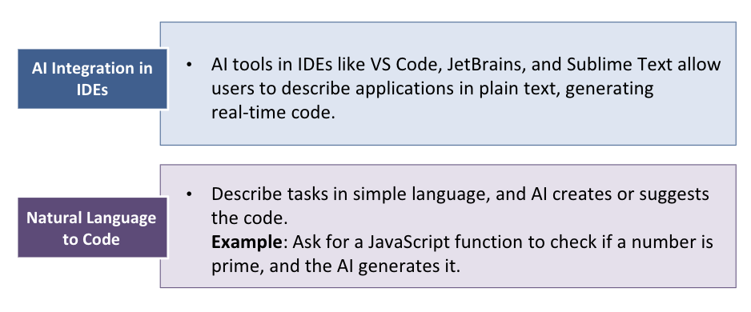
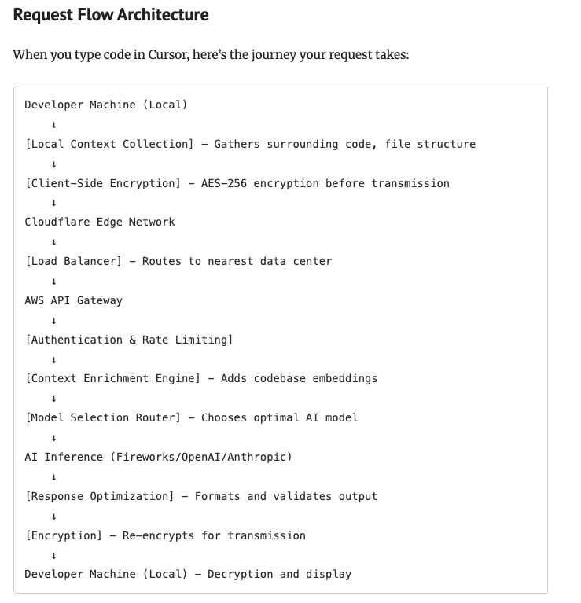
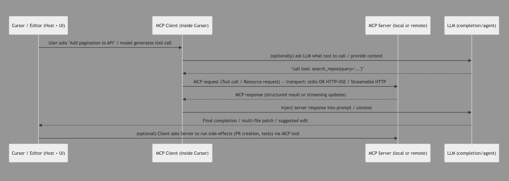

& The Tech Behind It
TechX Live - AI & Agentic AI Tech Talk Series
Himanshu Phulara
Technical Architect
Mohit Malik
Technical Architect
"Vibe Coding is a style of programming where you fully embrace AI assistance — describing what you want in natural language and letting the AI generate code, while you guide, iterate, and refine."

AI tools enabling the shift from coding to guiding intelligent agents
AI coding assistant evolving toward agent workflows
Use cases: Boilerplate, bug fixes, test generation, PR reviews
IDE: VS Code, JetBrains, Visual Studio, CLI, GitHub
Real-time suggestions + Copilot Chat + emerging repo-wide agents
AI-native IDE built for vibe coding
Use cases: Large refactors, multi-file edits, codebase Q&A
IDE: Standalone (VS Code-based)
Full repo awareness + autonomous agent workflows
AI reasoning + execution agents
Use cases: Debugging, architecture design, documentation, complex tasks
IDE: Web, API, VS Code plugins, Cursor integration, Codex desktop app
Codex: plan → write → test → iterate (agent loop)
Multimodal AI for cloud and application development
Use cases: API integration, mobile apps, cloud workflows
IDE: Android Studio (strong), VS Code (extensions), limited JetBrains
Deep integration with Google Cloud & ecosystem
Vibe Coding = Developer intent + AI agent execution across the codebase
The architecture behind AI-assisted coding
Foundation models (GPT-4, Claude, Gemini) trained on billions of code samples. They predict the next token based on context — essentially very sophisticated autocomplete.
Code is converted to numerical vectors capturing semantic meaning. Similar code clusters together, enabling "find code that does X" without keyword matching.
Instead of fine-tuning, RAG retrieves relevant code from YOUR codebase at query time and injects it into the prompt. This is how Cursor "knows" your patterns.
Responses stream token-by-token for instant feedback. Context windows (8K → 128K → 1M) determine how much code the model can "see" at once.
Explain what you want in plain English
AI produces code based on context
Evaluate, understand, verify
Refine with follow-up prompts
Key Insight: You're still the architect. AI is your highly capable assistant who can write code fast but needs your judgment and domain expertise.
What happens when you type in Cursor

From autocomplete to autonomous coding
An AI that can autonomously plan, execute, and iterate on multi-step tasks — not just respond to single prompts.
Example: "Add authentication to my Express app" → Agent reads routes, adds middleware, creates auth files, installs packages, tests it
Reasoning + Acting in a loop
Examine existing code, configs, dependencies
Make targeted changes with diff view
Execute npm, git, tests in terminal
Find patterns across codebase
Key Insight: Agents don't just generate code — they understand context, make decisions, and iterate like a junior developer would.
How Cursor connects to external tools & services

"Add pagination to API"
Tool call via stdio/HTTP
Structured data injected
Multi-file patch/edit
MCP enables Cursor to call external tools (GitHub, databases, APIs) — making it more than just an LLM wrapper. It's the bridge between AI and your infrastructure.
Good Prompt → Better Prompt
⚠️ Works, but lacks validation and clear strength rules
✓ Type-safe ✓ Validation ✓ Clear rules ✓ Tests
💡 Better prompts = Better code. Be specific about types, validation, edge cases, and tests.
Level up your AI collaboration
Reference specific files so AI understands your patterns
Guide AI through reasoning steps for complex problems
Persistent project-level instructions AI always follows
Build complexity incrementally, not all at once
From writing code → to steering outcomes
Know the limits to use it effectively
AI struggles with intricate state transitions, race conditions, and multi-step workflows. Often generates incomplete or buggy state logic.
AI frequently writes O(n²) when O(n) exists. Misses caching opportunities, creates memory leaks, ignores algorithmic efficiency.
AI doesn't know your proprietary systems, internal APIs, business rules, or why that "weird" legacy code exists. Context windows have limits.
Large refactors across many files often fail. AI loses track of dependencies, creates circular imports, breaks existing contracts.
Takeaway: Use AI for acceleration, not abdication. The harder the problem, the more human judgment matters.
Golden Rule: AI is a power tool, not autopilot. You're responsible for what ships.
Cursor, Copilot, or Claude
Unit tests, docs, utilities
Learn what works & doesn't
Help the team level up
Challenge: Try vibe coding for your next task. Generate tests, write documentation, or scaffold a new component. Compare time spent vs. traditional approach.
Let's explore this together
Thank you for your time!